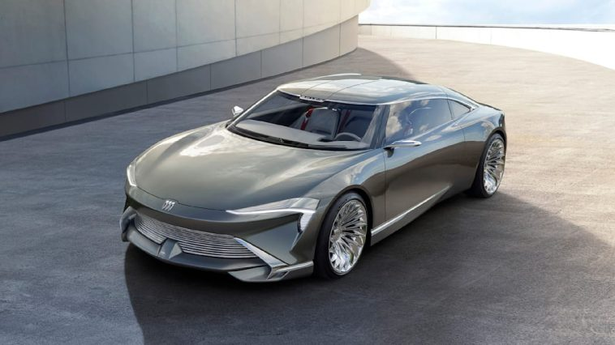
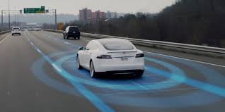

Іновація 1: Електромобілі

Електромобілі – це транспортні засоби, які працюють виключно на електроенергії,
отриманій від акумуляторів або інших джерел електричної енергії. Ця технологія представляє собою
екологічно чистий та сталий спосіб пересування, який вже зараз стає важливим вибором для багатьох
автовласників та автовиробників. Визначимо основні переваги електромобілів, які роблять їх такими
привабливими для сучасного світу.
Переваги електромобілів:
- Нульові викиди: Однією з ключових переваг електромобілів є відсутність викидів в
атмосферу. Вони не викидають шкідливі гази, такі як вуглекислий газ і оксиди азоту, що сприяє зниженню
забруднення повітря і боротьбі з кліматичними змінами.
- Економічні вигоди: Електромобілі є ефективнішими у використанні енергії, що дозволяє
власникам заощаджувати на пальному. Крім того, у багатьох країнах існують різні фінансові стимули для
покупців електромобілів, такі як податкові кредити та знижки на страхування.
- Мінімальний рівень шуму: Електромобілі мають значно менший рівень шуму порівняно з
бензиновими автомобілями, що сприяє зменшенню шумового забруднення в міських середовищах та покращенню
комфорту для пасажирів.
- Зменшення залежності від нафти: Використання електромобілів сприяє зменшенню
залежності від імпорту нафти та розвитку внутрішнього джерела енергії, що може збільшити економічну
стійкість країни.
- Низькі операційні витрати: Електромобілі вимагають менше обслуговування, оскільки у
них менше рухомих частин, які потребують заміни або обслуговування, що може зменшити витрати власників
на технічне обслуговування.
- Розвиток технології: Завдяки постійному розвитку технології, електромобілі стають
все більш доступними, з більшим запасом ходу і швидшою зарядкою.
Електромобілі виявляються важливими для майбутнього автотранспорту, і їх переваги у сфері екології,
економіки та комфорту роблять їх зрозумілим вибором для багатьох автовласників.
Іновація 2: Автопілот

Автопілот – це система, що дозволяє автомобілю автоматично виконувати багато функцій,
які традиційно потребують участі водія. Від технологій допомоги водієві до повного автономного водіння –
автопілот є однією з найбільш захоплюючих і важливих інновацій в автомобільній індустрії.
Переваги автопілоту:
- Збільшена безпека: Автопілот допомагає знизити людські помилки, які є основною
причиною ДТП. Система здатна реагувати швидше за водія, що значно знижує ризик аварій.
- Зниження втоми водія: Автопілот дозволяє водієві зняти стрес від тривалих поїздок,
автоматизуючи виконання складних або монотонних завдань, таких як підтримка швидкості чи керування в
пробках.
- Оптимізація витрат пального: За допомогою точних даних і алгоритмів автопілот може
оптимізувати рух, знижуючи витрати пального та покращуючи ефективність поїздки.
- Комфорт та зручність: Автопілот робить поїздки більш комфортними, дозволяючи водіям
відпочивати або займатися іншими справами під час поїздки.
- Доступність для людей з обмеженими можливостями: Автопілот відкриває можливості для
людей з інвалідністю або тих, хто не може керувати автомобілем, забезпечуючи їм доступ до мобільності.
- Технологічний прогрес: Автопілот є однією з найбільш інноваційних технологій, що
постійно розвивається, і забезпечує значне зростання інтелектуальних можливостей автомобілів, що
можуть самостійно аналізувати ситуацію на дорозі.
Технологія автопілоту значно змінює поняття водіння та безпеки, роблячи автомобілі більш розумними та
доступними для ширшої аудиторії.